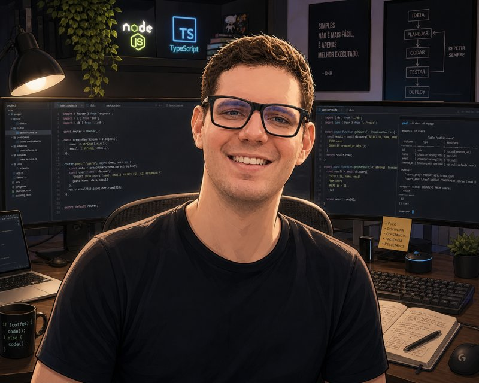

Jackson Raupp | WDD 130

Sou estudante de desenvolvimento de software pela Brigham Young University (BYU). Natural do estado do Paraná e atualmente residente em Mato Grosso, sou apaixonado por tecnologia e pela automação de processos, buscando constante aprendizado e evolução na área.